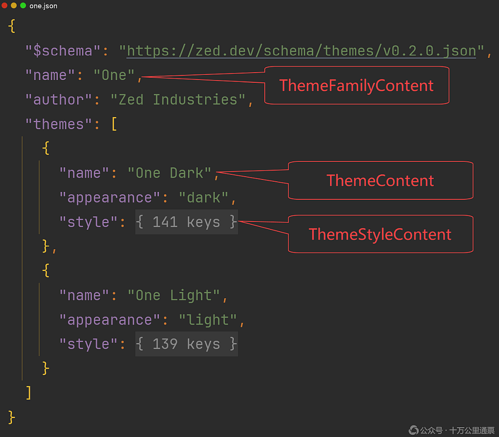

Rust GPUI 桌面应用开发入门：Assets 资源文件的加载与使用

对任何一种 GUI 框架来说， Assets / Resource 机制都是一项基础设施，通过它，应用程序能加载指定的资源文件（图标、字体、主题等）并在程序中以 API 的方式来设置或显示这些资源。继 《Rust GPUI 桌面应用开发入门：创建项目和概念讲解》 和 《Rust GPUI 桌面应用开发入门：界面交互和事件响应》 两篇文章之后，我们来研究一下 GPUI 的 Assets 机制。特别说明：本文探讨的是 Zed 项目 内而非 crates.io 上的 GPUI ，鉴于 Zed 项目迭代迅速且不保证 GPUI 模块向前兼容，验证和测试时要特别注意版本。本文基于的是 Zed 当前（2026年9月）的最新版本 v1.20.2 。本文原文链接： https://laurence.enlightgram.com/gpui/gpui-getting-started-3-assets/ ，禁止转载。
1. Assets 的接口和实现
GPUI 的 Assets 机制是由一个抽象接口 + 一个具体实现组成的，抽象接口是由 GPUI 库定义，每一个要使用 Assets 机制的应用需要基于这个抽象接口实现自己的 Assets。具体地说， gpui::assets::AssetSource 就是 GPUI 提供的接口，供外界继承，属于 GPUI； assets::Assets 则是 Zed 项目自己的类，是 Zed 为自己加载资源文件而编写的，它实现了 AssetSource，然后加载了 Zed 项目内的 字体 、图标、主题等文件，可以理解为是 Zed 在 AssetSource 框架下实现的自己的项目资源。
1.1 核心 Trait：AssetSource
AssetSource 作为一个 trait，仅针对 Asset 的读取进行了“规范”，也就是定义了 load() 和 list() 两个方法签名，再无其他实质内容，对资源文件的实际读取其实是交给了具体的实现类，以下是其定义（ zed/crates/gpui/src/assets.rs:13 ）：
1 | pub trait AssetSource: 'static + Send + Sync { |
甚至连"什么都没有"也是一种实现： impl AssetSource for () 永远返回 None ，用于 headless/test context（不需要真实图标字体时用它占位）。
这里，我们着重解释一下 AssetSource trait 定义处的 'static + Send + Sync 是 supertrait bounds ，意思是：任何类型只要想实现 AssetSource ，就必须同时满足这三个约束： 'static + Send + Sync ，原因是：在 GPUI 中， AssetSource 会被包进 Arc 长期持有，并跨线程/跨异步任务传递给字体渲染、图片加载等子系统使用，所以必须在 trait 层面强制要求实现者是 'static + Send + Sync ，否则编译不过。具体的用例可以通过搜索 Arc<dyn AssetSource> 在代码中找到，我们就不一一列举了。
这里，我们抛开 AssetSource 不谈，任何一种类型，如果它想安全地在线程中使用（能 move 进线程）并还要多线程共享访问的话，就必须是 'static + Send + Sync 的，这里有两层递进的逻辑，首先，这个类型想要出现在线程的闭包中，必须满足 Send + 'static ，这是对传入闭包中的类型的约束： T: Send + 'static ，然后，如果还要需要在多线程中共享访问 这个类型的值（或值指向的资源），这时，就得把它装进 Arc 中，而 Arc<T> 只有在 T: Send + Sync 时才是 Send 的。也就是说，只要你想把 Arc<T> 传进 spawn， T 就必须同时满足 Send 和 Sync ，以上两层因素叠加，T 就只能是 'static + Send + Sync 的了！
要完全理解 'static + Send + Sync 必须把它们三个拆开，逐一理解，这三个 trait 并不简单，每一个蕴藏了很深的知识，关于 'static 请参考 《困惑是正常的，'static 生命周期约束本来就不简单》 ；关于 Send + Sync 请参考 《万物皆可多线程？深入解读 Rust 的 Send 和 Sync》 ；关于 thread::spawn 闭包的类型约束 T: Send + 'static 请参考 《Rust 高级特性秀场：spawn 闭包的类型约束》 。
1.2 具体实现：Assets
Assets 是 AssetSource 的一个具体实现，作为一个结构体，它并没有定义自己的字段，而是类型声明上添加了大量的描述文件路径的注解：
1 |
|
Assets 其实是借助了 rust-embed （ https://crates.io/crates/rust-embed ）这个 package，在编译时将项目中存放的字体、图片、音效等资源文件嵌入到了生成的二进制文件中，在程序启动时，可以从二进制文件中直接加载这些文件并使用它们，非常方便。这种做法在 GUI 应用中很普遍，Qt 也是把资源文件编译进生成的二进制文件中的。
我们来看一下上面的示例代码，首先是 #[derive(RustEmbed)] ，通过在结构体定义前添加派生宏 RustEmbed，让 Assets 自动实现了 RustEmbed（https://docs.rs/ rust -embed/latest/rust_embed/trait.RustEmbed.html），这个 trait 有两个方法，一个是 get() 用于获取嵌入的文件和相关元数据；另一个是 iter() 用于迭代指定目录下的所有文件。
不过，现在大家看到的更多是写成 #[derive(Embed)] ，实际上，这两个派生宏完全一样，Embed 只是 RustEmbed 的一个别名（ pub use RustEmbed as Embed ），之所以又引入一个别名是为了让名字更简洁：在 rust_embed:: 下面再叫 RustEmbed 有点重复， rust_embed::Embed 读起来更顺。同时旧名字 RustEmbed 仍然保留，已有代码不用改，新代码可以用短名字。这是库作者常用的"改名但不破坏兼容"的做法。
一个值得注意的地方是：Zed 把 assets.rs 文件单独拿出来放进一个独立的名为 assets 的 crate 中，这是很少见的，因为通常来说像这样的结构体一般就是项目中的一个 util 类，不会单独成为一个模块的。Zed 这样做的目的是为了避免每次修改 zed 主 crate 都要重跑这个宏、拖慢增量编译。
1.3 Assets 的业务方法
Assets 主要有三类五个业务方法：
| 方法名 | 来源 | 功能 |
|---|---|---|
| get() | 定义自 RustEmbed，通过派生宏自动实现 | 获得指定路径下的文件和元数据 |
| iter() | 定义自 RustEmbed，通过派生宏自动实现 | 迭代所有资源文件据 |
| load() | 定义自 AssetSource | 基于 get() 方法的二次封装，将原本返回的 EmbeddedFile 改为输出文件数据（字节数组） |
| list() | 定义自 AssetSource | 基于 iter() 方法的二次封装，将原本返回的 str 改为 GPUI 自己封装的 SharedString |
| load_fonts | 定义自 Assets 自己 | 遍历 list("fonts") ，把所有 .ttf 读出来喂给 cx.text_system().add_fonts(...) ，这是应用启动时手动调用的初始化步骤，不是 GPUI 自动做的。 |
下面我看一下 Assets 最上层 API，也是最可能被我们直接使用到的三个方法： list() 、 load() 、 load_fonts() 。
2. Assets 的加载机制
2.1 常规资源的加载
常规资源是指图片、图标、声音等，它们对应的 Assets 是在 Application 启动时注入的，具体的位置是 menu_example 里的 gpui_platform::application().with_assets(Assets).run(...) ，主要的加载逻辑是在这个 Application::with_assets 方法里：
1 | pub fn with_assets(self, asset_source: impl AssetSource) -> Self { |
该方法把 Assets 包成 Arc<dyn AssetSource> ，同时存进 App （可通过 cx.asset_source() 拿到），也传给 SvgRenderer 用来加载图标字体，之后整个 app 生命周期里只有这一份 Assets。
2.2 主题资源的加载
但是，主题资源 themes 的加载有一点特殊，负责加载 themes 的入口是 theme_settings::init() ，这个方法接收的并不是 Assets ，而是一个枚举：
1 | /// Which themes should be loaded. This is used primarily for testing. |
theme_settings::init() 在加载主题资源时，会根据传入的枚举来决定加载什么样的主题资源：
• 如果传入的是 LoadThemes::JustBase ，则什么也不加载；
• 如果传入的是 LoadThemes::All ，加载全部主题
以下是对应代码：
1 | pub fn init(themes_to_load: LoadThemes, cx: &mut App) { |
这样设计的原因是：有时候（比如测试时）人们并不想加载主题，引入 LoadThemes 这个枚举的目的就是让“是否加载主题”成为可选的。
但是，以上并不构成“主题资源必须单独配置一份”的理由，因为，理论上，修改一下 LoadThemes::All 的实现，改为为从 cx.asset_source() 处获取 Assets 是完全可行的。这里并没有“绝对不可”的理由，显然， GPUI 是想通过 LoadThemes 这个枚举来明确地表达是否加载主题是可选的，在确定要加载时，大概是为了想突出“可选“的意味，选择就地创建了一个新的 Assets，并不是非这样不可 ，或许以后这里会改写。
3. 使用 Assets
Assets 的使用可以分成两种情景：
• 直接使用 ： Assets 的 list() 和 load() API（极为少见）
• 间接使用 ：在 img("images/zed_logo.svg") 、 svg().path("icons/sparkle.svg") 中通过指定资源文件路径
我们极少会有机会直接使用 Assets 的 API 去加载或列出资源文件，因为这些都已被需要使用资源文件的组件封装好了，我们最多也就是给组件指定一下资源文件的路径。下面我们捡实际编写代码可能会遇到的情形进行介绍。
3.1 列出资源文件
正常情况下，我们不会在界面中列举资源文件，这对用户毫无意义。不过，我们确实可能会在调试代码中这样的写，因为这是验证 Assets 机制已经正常工作和检查配置的资源文件路径是否正确的最有效方法。例如这样：
1 | let images = Assets.list("images").unwrap_or_default(); |
程序输出：
1 | images/business_stamp.svg |
其中传给 list() 方法的 "images" 参数是路径，准确的说是以 folder = "../../assets" 作为根目录的相对路径。这个方法能列出指定目录下的所有文件。
3.2 通过 img() 显示图片
img("images/zed_logo.svg") ：这是最简单明了的一种资源文件使用方式了，只需给出图片路径，就可以在界面上看到图片了。这里我们简单介绍一下 img() 元素展示图片的流程。首先是 img() 如何从传入的路径字符串拿到图片的，这里使用到 Into trait 作了自动的类型转换。 img() 方法接收的参数类型是： source: impl Into<ImageSource> ，显然 &str 是不匹配的。但是 ImageSource 自动实现了 From<&str> ，也就是支持从一个 &str 构建一个 ImageSource 实例。众所周知，一旦一个类型 A 实现了从一个类型 B 的值构建的 From 特质： A: From<B> ，Rust 编译器会自动为类型 B 实现 B: Into<A> ，也就是自动在类型 B 上实现“反向”的类型转换。所以， &str 就自动有了 into() 方法，这样一来，传入一个 "images/zed_logo.svg" 就以通过调用它的 into() 方法得到了一个 ImageSource 实例。
然后我们再简单介绍一下 ImageSource 和 Resource 这两个结构体。 ImageSource 描述的是：图片文件的来源，总共有四种，Resource 是其中的一种， Resource 表示：需要异步加载并解码的外部资源，主要通过路径的 schema 前缀来加以区别，它分成三种：Uri、Path、 Embedded ，看命名就知道分别了，像我们提供的 "images/zed_logo.svg" 没有任何的 schema 前缀，就会被自动认定为资源文件。关于 img() 更多详细的介绍，请参考 《GPUI 笔记：img / svg / themes 的加载与渲染流程》
3.3 通过 svg () 显示图标
在 Zed 中 svg() 主要负责渲染 svg 格式的图标。由于 svg 作为一种矢量图的特殊性，它有自己一套独立的渲染方法，所以用 svg() 进行了单独的封装。不过，这些不是我们本文关注的重点，所以先略过，更多详细的介绍，请参考 《GPUI 笔记：img / svg / themes 的加载与渲染流程》
3.4 通过 font_family() 设置字体
Assets::load_fonts 把 fonts/**/*.ttf 读出来交给 cx.text_system().add_fonts(..) ，之后用 .font_family("Lilex") 来设置字体。其中，在 Zed 的设置界面上会看到两种特殊的字体名： .ZedSans / .ZedMono ，它们其实是 Zed 自己给字体其的别名，当前， .ZedSans 对应的是 IBM Plex Sans ， .ZedMono 对应的是 Lilex 。
3.5 使用主题
主题部分的内容会比较多，我们先简单介绍一下，以后会视情况单独写文章介绍。我们先来了解一下 Zed 主题文件的结构: assets/themes 目录下的每一个 json 文件都是一个“主题族”而不是一个单一的主题，以默认主题族 One 为例，它其实包含两个主题： Once Light 和 Once Daark ，主题的详细配置都是放在 json 中 style key 对应的部分，它们的结构如下：

Zed 使用 serde ( https://crates.io/crates/serde ) 来解析 json，然后把解析出来的部分映射到上图所示的： ThemeFamilyContent 、 ThemeContent 、 ThemeStyleContent 三个结构体中。这样，就获得了配置文件在程序中的“映射对象”。至于主题是如何渲染的，这个话题比较麻烦，暂时不需要了解这么深。我们只简单介绍一下界面如何获取主题配置的信息，组件一般可以这样获得主题的一些配置项：
1 | cx.theme().colors().text |
Rust GPUI 桌面应用开发入门：Assets 资源文件的加载与使用
https://laurence.enlightgram.com/gpui/gpui-getting-started-3-assets/